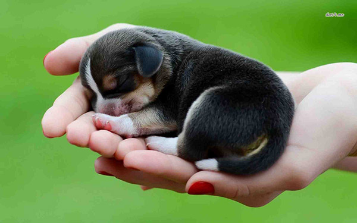
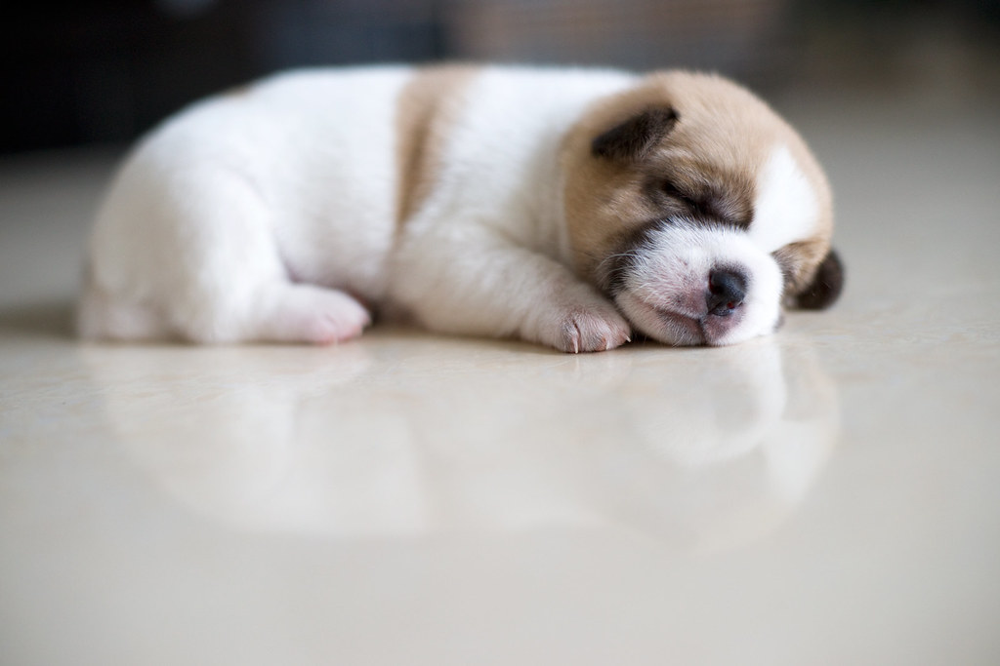
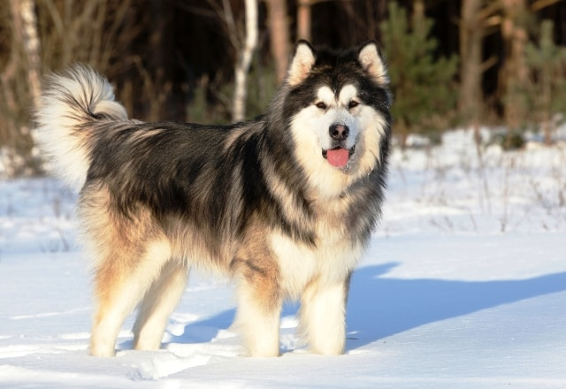
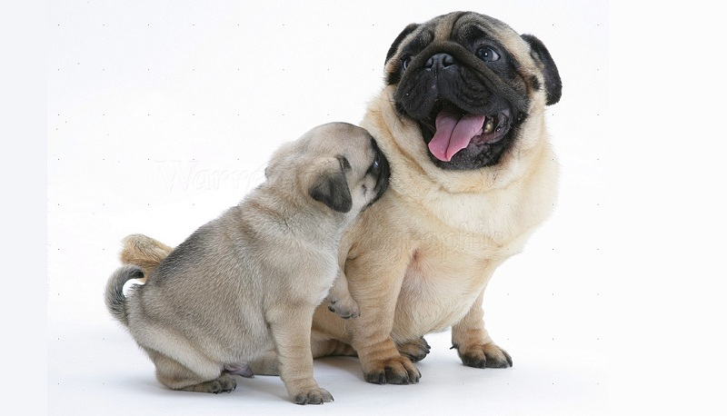
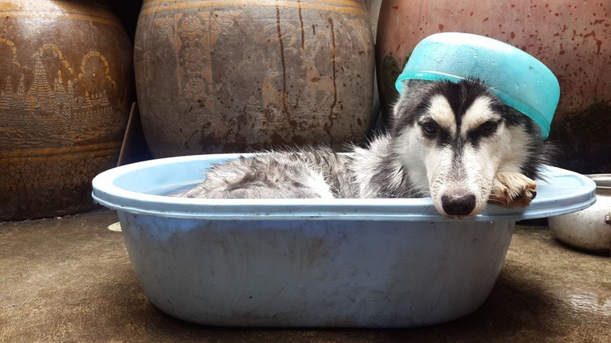
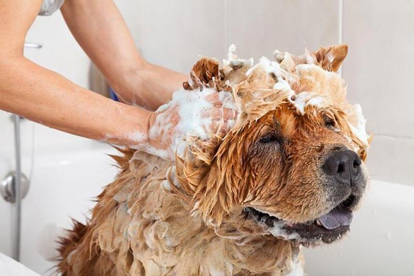
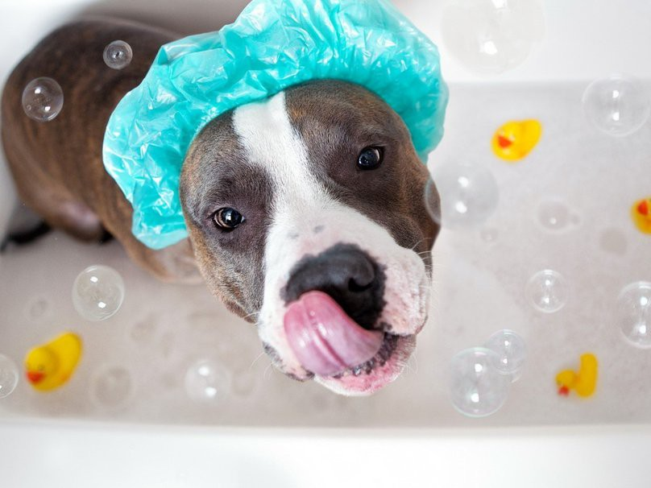
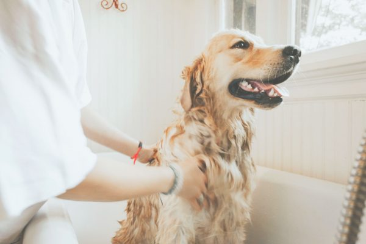
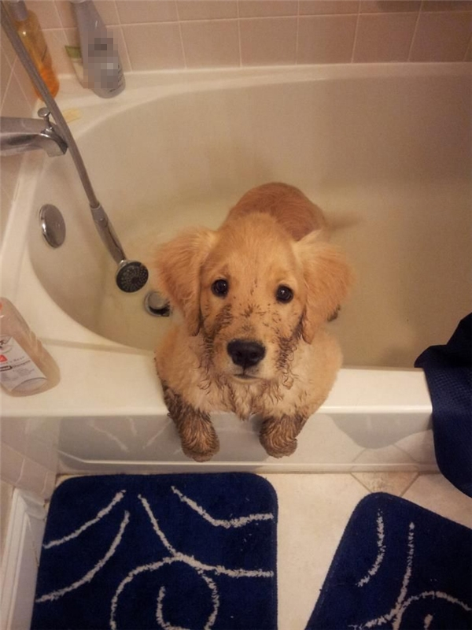
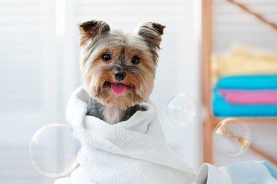

Mọi người khi đi mua chó cần lưu ý , chỉ nên mua chó con từ 2 đến 2,5 tháng tuổi trở nên , như vậy mới đảm bảo về thể lực tối thiểu khi ta chăm sóc.
Chó con từ 2 tháng tuổi đến 6 tháng tuổi cho ăn 3 bữa một ngày , thời gian chia đều trong ngày cho hợp lý . Các bữa ăn cần có một khoảng thời gian nhất định để cho chó tiêu hóa hết thức ăn (Không nhất thiết người ăn lúc nào thì cho chó ăn luc đó , sẽ không hợp lý về thời gian).

Sau bữa ăn nên cho chó chạy tự do và vệ sinh 5 , 10 phút và cũng để tiêu hóa thức ăn . Bữa chiều tối ăn nhiều hơn một chút và chủ chó dành thời gian thả chó nhiều hơn .
Thức ăn cho chó bao gồm : bột gạo , bột ngô , thịt băm nhỏ hoặc các lục phủ ngũ tạng của gia súc ( Trâu , bò , ngựa , hạn chế thịt lợn vì khó tiêu ) . Thức ăn đều phải nấu chín và loãng như cháo đừng cho ăn khô sẽ không tốt . Định lựơng bao nhiêu là tùy vào giống chó to hay nhỏ mà ước lượng vì không có cụ thể .

Bữa ăn của chó thường kéo dài không quá 5 phút , nếu chó ăn hết sạch và còn hơi thòm thèm là đủ , sau khi ăn lập tức phải mang bát đi rửa ngay cho sạch sẽ . Nếu chó ăn xong mà còn thừa thúc ăn , đem đổ đi và bữa sau phải giảm định lượng xuống cho phù hợp ( Một số người nuôi chó có thói quen hay để thừa thúc ăn để khi nào đói chó tự ăn , như vậy là hại chó vì thức ăn thừa dễ ôi thiu chó sẽ bị đi ỉa rất dễ chết ) . Đến bữa ăn khi nghe thấy bước chân của chủ chó đã rít lên ầm ầm vì bị mùi thức ăn kích thích . Có thể một tuần cho chó ăn một bữa ăn no hơn bình thường và ăn thêm một quả trứng gà nhưng phải nấu chín sau đó cho ăn tái dần cho đến khi có thể ăn sống không sao cả . Sẽ rất rốt cho sự phát triển của chó và bộ lông sẽ rất mượt mặc du chúng ta ít chải lông . Sau khi đi dạo buổi tối có thể cho uống một ít sữa hoặc nước đường pha loãng .

Sau 5 tháng có thể bổ xung hàng tuần một ít thị bò , ngựa sống nhưng phải thật tươi với cường độ từ ít đến nhiều sau này ( Đối với chó to , canh gác và làm nghiệp vụ ) . Đừng sợ chó bị đi ỉa khi ăn thịt sống , vì bản năng hoang dã chó vẫn ăn thị sống từ các con thú trong rừng , sau khi ở với người chó mới thuần hóa ăn các thức ăn khác của người .
Từ 6 tháng đến 1năm tuổi chúng ta cho chó ăn 2 bữa một ngày là đủ . Vào thời kỳ này chó đã bắt đầu luyện tập thể lực nên đòi hỏi lượng chất tăng nên ( Định lượng không tăng , nếu không chó sẽ bị béo và lười vận động sinh ra ủ dũ , đừng vì thương chó mà cho ăn nhồi nhét vô cùng tai hại . ) Ở nước ngoài có bán sẫn thịt hộp cho chó khoảng 1kg đến 1,2kg với giá phải chăng . Ở Vn Tùy thuộc vào kinh tế của chủ nuôi mà cung cấp ; Bạc nhạc , phổi , lòng và các đồ rẻ tiên ở lò mổ nếu không được tươi thì phải nấu chín vì trong đó có nhiều sán . Tẩy giun , sán thường xuyên thì chó mới lớn được, và thức ăn sẽ được hấp thụ toàn bộ.

Chế độ dinh dưỡng hợp lý kết hợp với luyện tập và chạy nhảy hợp lý sẽ cho ta một con chó đẹp về hình thể , thông minh và cường tráng . Sự phát triển của chó mãnh liệt nhất là đến một năm tuổi , mọi hình dáng ,thể chất phụ thuộc vào thời kỳ này rất nhiều . Nhiều con bị hỏng chân sau , phom dáng không đạt là do cáh nuôi dưỡng của chủ chưa đúng chứ nhiều khi không phải do giống .
Chăm sóc hợp lý và khoa học sẽ cho ta một con chó trưởng thành như ý và vô giá .
Chó trửơng thành sau một năm tuổi chỉ cần ăn một bũa một ngày là đủ , nhưng vẫn phải đủ về chất lựong ( Thịt nhiều rau it , va thỉnh thoảng cho gặm ống xương bò hoặc xương đùi bò ) . Chó nuôi vào các mục đích khác nhau , và các giống to , nhỏ thì định lượng và chất lượng cũng khác nhau .

Chó về già thì giảm trọng lượng và chỉ nên duy trì không được để chó béo sẽ sinh nhiều bệnh về chó già .
Tuổi thọ trung bình của chó vào khoảng 12 đến 14 năm .
Tưởng chừng đơn giản, nhưng chúng ta cần lưu ý những vấn đề sau:
- Khác với người, chó không có tuyến mồ hôi trên da do đó mức độ trao đổi khí và độ ẩm để tỏa nhiệt trên da cực nhỏ. Ở vùng khí hậu khô, lạnh việc tắm cho chó là rất hạn chế, thậm chí người ta không tắm cho chó.

- Ngược lại khí hậu nhiệt đới nóng ẩm Việt nam, rất nhiều yếu tố cấu thành chất bẩn bám vào da làm chó rất khó chịu : độ ẩm cao+ bụi bẩn dễ làm bết, dính lông thành cục. Ký sinh trùng da: Ve. mòng, ghẻ, nấm được đà tấn công gây rụng lông, viêm, nhiễm độc da, hoại tử bong vảy, chảy nước bốc mùi hôi...Tắm là biện pháp rất cần thiết để chăm sóc bộ da, lông- vẻ đẹp đặc trưng ĐẶC BIỆT của các giống chó lông dài : Cocker Spaniel, Shetter, Poodle, Golden, St. Bernard, Phốc Sóc, Bắc Kinh, Thần khuyển Tây Tạng...

- Các giống chó lông ngắn : Boxer, Rottweiler, Labrador, dachshund... cũng nên tắm sạch sẽ vào mùa nóng ẩm.
- Thân nhiệt chó cao hơn người : 38o5 +/- O,5oC chịu nóng rất kém. Mùa hè cần tắm cho chó cảm giác thoải mái, dễ chịu, giúp điều hòa thân nhiệt, tránh được bệmh cảm nóng ( heat strock ).
- Thời tiết quá lạnh, nhất là đổi gió mùa ở miền Bắc, khi nhiệt độ ngoài trời xuống tới dưới 18oC.
- Chó non đang bú mẹ hoặc mới tách mẹ.
- Chó ốm hoặc có dấu hiệu nghi ốm.
- Chó cái đang kỳ động dục chuẩn bị phối giống, nếu tắm sẽ giảm mùi "đặc trưng hấp dẫn chó đực" sẽ giảm hưng phấn tính đực khi giao phối.

- Chó cái sau giao phối trong vòng 15 ngày.
- Chó mới sinh con.
- Chó mới mua về nuôi.
- Chó mới tiêm chích ngừa dịch bệnh.
- Chó vận chuyển.
- Nước tắm chó : ấm về mùa đông, nước sạch, không tắm ở sông, hồ ao tù ô nhiễm.
- Shampoo : có thể dùng các loại chuyên dụng cho chó bán tại các cửa hàng thuốc Thú y hoặc siêu thị. Hoặc một số loại shampoo của người có độ ẩm và dướng da tốt. Các loại shampoo trị ve, rận, nấm phải cỏchi định của BSTY. Chó bị bệnh ngoài da, việc tắm chó phải có ý kiến và chỉ dẫn của BSTY.

- Tắm bằng nước lá cây, hoa quả : Có thể dùng quả chanh vắt nước lên bộ lông chó sau khi tắm bằng shampoo để làm tơi lông, tránh vón cục và trung hòa độ Kiềm của shampoo. Sau khi vắt vài quả chanh lên lông, lại phải xả sạch ngay bằng nước. các loại lá: Khế, bưởi, chè xanh, xà - cừ, xoan hoặc các loại lá chua, chát khác (Phải chắc chắn không độc) có thể dùng tắm chó có viêm nhiễm, lở loét hoặc ký sinh trùng ngoài da.

- Thao tác tắm chó: Không được để nước hoặc xà phòng vào tai, mắt chó. Sau khi tắm cần lau và sấy khô bộ lông, dùng que bông cotton ngoáy sâu thấm khô vệ sin tai, nhất là với giống chó tai cụp, dài như : Cocker Spaniel, Shetter, Poodle, Golden, St. Bernard, Labrador... Không tắm chó ở thế nằm ngửa.
- Nên tắm chó lúc đói, sau khi đã đi toilet.
- Với những con chó mới tắm lần đậu, chưa quen, nên nhẹ nhàng và tắm nhanh bằng nước ấm. Không xối nước vào phần đầu ngay.
- Tùy thuộc vào mùa khí hậu, giống chó , tuổi chó. Điều này do chủ chó tự xác định.

 Bài viết gần đây
Bài viết gần đây

August 31, 2019

August 31, 2019

August 31, 2019

August 31, 2019

August 31, 2019